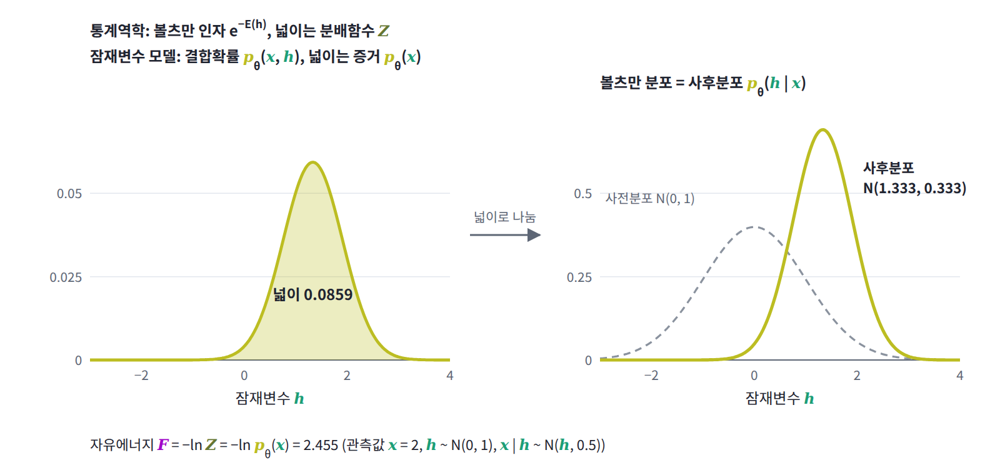
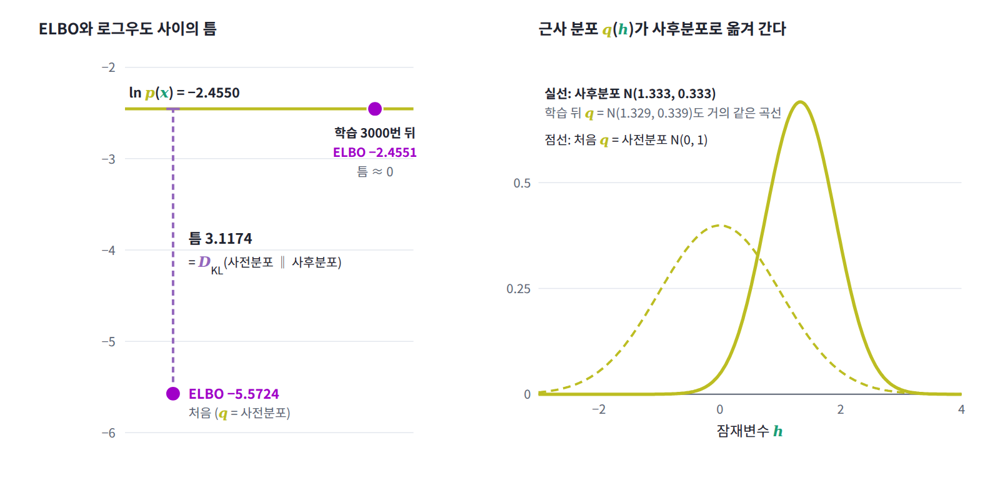

ELBO: 근사 분포의 음의 자유에너지
아무 분포에 매긴 자유에너지는 볼츠만 분포의 자유에너지보다 정확히 kT × KL만큼 높았고, 숨은 변수를 합쳐 없애면 보이는 변수의 에너지 자리에 자유에너지가 남았다. 잠재변수 모델에서 관측값을 고정하고 잠재변수를 미시상태로 보면 이 두 사실이 한꺼번에 쓰인다. 그렇다면 VAE의 손실은 이 말로 어떻게 읽힐까?
역사: 자유에너지로 읽은 EM
ML이 이 양을 자유에너지라는 이름으로 만난 것은 20세기 끝 무렵이다. 닐과 힌턴은 1998년 논문 초록에 「음의 자유에너지를 닮은 함수를 제시하고, M 단계는 이 함수를 모델 매개변수에 대해, E 단계는 관측되지 않은 변수의 분포에 대해 최대화한다는 것을 보인다」고 적었다. 15년 뒤 킹마와 웰링의 VAE는 같은 함수를 신경망으로 최대화했고, 그 함수가 오늘날 ELBO라 부르는 양이다.
잠재변수 모델을 통계역학으로 번역하기
잠재변수 모델 p_θ(x, h)가 관측값 x를 설명한다고 하자. x를 고정하고 잠재변수 h만 미시상태로 보면, 온도 1에서 에너지는 E(h) = −ln p_θ(x, h)이고 그 분배함수는 Σ_h p_θ(x, h) = p_θ(x)다. 이렇게 번역하면 잠재변수 모델의 용어가 하나씩 통계역학의 용어와 짝을 이룬다.
| 통계역학 | 잠재변수 모델 (x 고정) |
|---|---|
| 미시상태 | 잠재변수 h |
| 에너지 E(h) | −ln p_θ(x, h) |
| 분배함수 Z | 증거 p_θ(x) |
| 자유에너지 F = −ln Z | 음의 로그우도 −ln p_θ(x) |
| 볼츠만 분포 | 사후분포 (x가 주어졌을 때 h의 분포) |
| 아무 분포의 자유에너지 F[q] | −ELBO |
| F[q] − F = D_KL(q ‖ 볼츠만 분포) | 틈 = D_KL(q ‖ 사후분포) |

표의 마지막 두 줄을 식으로 적으면 다음과 같다. 변분 원리의 F[q] = F + kT·D_KL에 온도 1과 이 번역을 넣은 것뿐이다.
KL은 0 이상이므로 ELBO는 로그우도의 하한이고, 틈은 q가 사후분포에서 벗어난 만큼의 KL이다. ELBO의 첫 항은 평균 에너지에 마이너스를 붙인 것이고 둘째 항은 엔트로피이니, ELBO를 키운다는 것은 에너지를 낮추면서 엔트로피를 지키는 자유에너지 최소화 그 자체다. VAE 논문이 쓰는 모양은 에너지를 디코더 몫과 사전분포 몫으로 나눠 −ln p_θ(x, h) = −ln p_θ(x | h) − ln p(h)로 쓰고, 사전분포 몫을 엔트로피와 묶은 것이다.
재매개화로 자유에너지 내리기
이번에는 자유에너지를 직접 최소화해 보자. 잠재변수 h가 표준정규분포를 따르고 관측값이 x | h ~ N(h, 0.5)인 모델에서 x = 2를 관측했다고 하자. x를 고정하면 에너지는 E(h) = −ln p(x, h)이고, 이 에너지의 분배함수가 p(x), 볼츠만 분포가 사후분포 p(h | x)다. 정규분포 q(h) = N(m, s²)를 후보로 두고, 변분 원리의 F[q] = ⟨E⟩_q − H(q)를 줄이는 방향, 곧 그 마이너스인 ELBO를 키우는 방향으로 m과 s를 학습한다. 기댓값 ⟨E⟩_q는 q에서 뽑은 256개 표본으로 어림하는데, 표본을 h = m + s·ε(ε는 표준정규 잡음)로 만들어 m과 s로 미분할 수 있게 하는 것이 VAE의 재매개화 기법이다. 정규분포 q의 엔트로피는 ln s + ½ ln(2πe)로 정확히 알려져 있으므로 그대로 쓴다.
import torch, math
torch.manual_seed(0)
x, s2 = 2.0, 0.5 # 관측값 x, 잡음 분산: h ~ N(0, 1), x | h ~ N(h, 0.5)
def log_joint(h): # ln p(x, h) = −E(h) (온도 1)
return (-0.5 * h**2 - 0.5 * (x - h)**2 / s2
- 0.5 * math.log(2 * math.pi) - 0.5 * math.log(2 * math.pi * s2))
def exact_elbo(m, v): # q = N(m, v)일 때 ⟨ln p(x,h)⟩_q + H(q)를 적분으로
return (-0.5 * (m**2 + v) - 0.5 * ((x - m)**2 + v) / s2
- 0.5 * math.log(2 * math.pi) - 0.5 * math.log(2 * math.pi * s2)
+ 0.5 * math.log(2 * math.pi * math.e * v))
m = torch.tensor(0.0, requires_grad=True) # q(h) = N(m, s²), 처음엔 사전분포와 같다
log_s = torch.tensor(0.0, requires_grad=True)
opt = torch.optim.Adam([m, log_s], lr=0.02)
print(f"시작 ELBO {exact_elbo(0.0, 1.0):.4f} (q = 사전분포)")
for step in range(1, 3001):
h = m + torch.exp(log_s) * torch.randn(256) # 재매개화: 표본을 m, s의 함수로 만든다
entropy = log_s + 0.5 * math.log(2 * math.pi * math.e)
elbo = log_joint(h).mean() + entropy # 몬테카를로로 어림한 −F[q]
opt.zero_grad(); (-elbo).backward(); opt.step()
if step % 1000 == 0:
v = math.exp(2 * log_s.item())
print(f"{step:5d} ELBO {exact_elbo(m.item(), v):.4f} m {m.item():.3f} s² {v:.3f}")
log_px = -0.5 * math.log(2 * math.pi * (1 + s2)) - 0.5 * x**2 / (1 + s2)
print(f"ln p(x) = {log_px:.4f}, 사후분포: 평균 {x/(1+s2):.3f}, 분산 {s2/(1+s2):.3f}")
# 시작 ELBO -5.5724 (q = 사전분포)
# 1000 ELBO -2.4550 m 1.338 s² 0.332
# 2000 ELBO -2.4557 m 1.326 s² 0.350
# 3000 ELBO -2.4551 m 1.329 s² 0.339
# ln p(x) = -2.4550, 사후분포: 평균 1.333, 분산 0.333
q를 사전분포 N(0, 1)로 둔 처음에는 ELBO가 −5.5724로 참값 ln p(x) = −2.4550보다 3.1174만큼 낮다. 이 틈은 사전분포와 사후분포 사이의 KL과 정확히 같다. 학습이 진행되면 q는 사후분포 N(1.333, 0.333)으로 다가가고 ELBO는 ln p(x)에 소수 셋째 자리까지 붙는다. 자유에너지 F[q]의 최솟값이 −ln Z, 곧 −ln p(x)라는 사실을 표본과 경사 하강만으로 확인한 것이다. 출력에 남은 소수 넷째 자리의 흔들림은 표본 256개로 기울기를 어림한 탓이다.

ML에서: VAE와 EM
킹마와 웰링(2013)의 논문은 첫 식을 「log p_θ(x) = D_KL(q_φ(z|x) ‖ p_θ(z|x)) + L(θ, φ; x)」로 적고, 위의 둘째 식과 같은 모양을 학습 목표로 삼았다(논문의 z가 이 책의 h다). 이 장을 마친 독자는 이 식을 「근사 분포 q의 자유에너지는 참 자유에너지 −ln p(x)보다 정확히 KL만큼 높다」로 읽게 된다. 인코더가 내놓는 q는 대개 대각 정규분포로 모양이 묶여 있어서 사후분포와 완전히 같아질 수 없고, 그래서 VAE에서는 이 틈이 끝까지 남는다.
역사에서 본 닐과 힌턴(1998)의 초록은 EM 알고리즘을 같은 식으로 읽은 것이다. 이 장을 마친 독자는 그 문장을 「EM은 자유에너지 F[q, θ]를 q와 θ에 대해 번갈아 내리는 좌표 하강이다. E 단계는 q를 이 계의 볼츠만 분포인 사후분포로 바꿔 틈을 0으로 만들고, M 단계는 그 q를 고정한 채 평균 에너지 ⟨−ln p_θ(x, h)⟩_q를 θ에 대해 낮춘다」로 읽는다. q를 사후분포로 정확히 옮길 수 없는 큰 모델에서는 q를 신경망으로 두고 두 단계를 한 번의 경사 하강으로 합치는데, 그것이 VAE다.